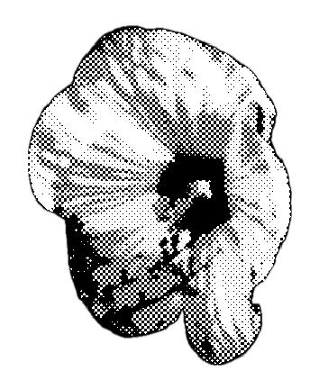

My Exercise
Exercise3 Handmade website
Exercise4:CSS style practice
Exercise4 round2:Hover/movement practice
Exercise5:Javascript practice
Exercise6:Family of Forms PPT
Exercise6:Family of Forms Grid generator
Exercise8:Patterns
Exercise9:Random
Exercise10:Movingballs
Final Software: *weather*